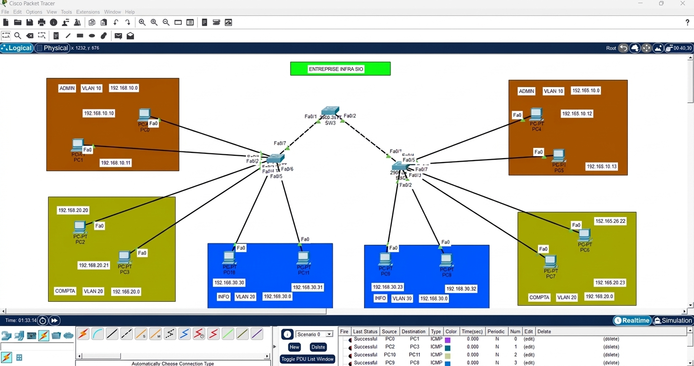

Segmentation réseau avec VLAN
Mise en place de VLAN et configuration des ports access et trunk afin de segmenter le réseau et de transporter les VLAN entre commutateurs.

Découvrez une sélection de réalisations en systèmes, réseaux et services informatiques pour le BTS SIO option SISR.
Ce tableau récapitule l’ensemble des réalisations professionnelles effectuées durant la formation BTS SIO option SISR, en cours de formation et en milieu professionnel (stages).


Mise en place de VLAN et configuration des ports access et trunk afin de segmenter le réseau et de transporter les VLAN entre commutateurs.

Conception en équipe d’une solution de répartition de charge et de continuité de service à l’aide de HAProxy et Keepalived.

Étude d’une infrastructure réunissant gestion de parc, annuaire, services système et pare-feu pour répondre aux besoins d’un environnement professionnel.

Stage au sein de NATASSUR, courtier en assurances pour particuliers et professionnels.